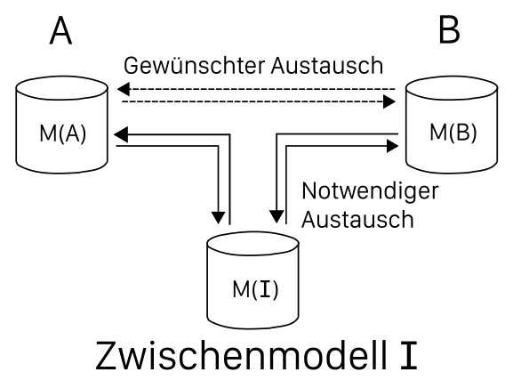
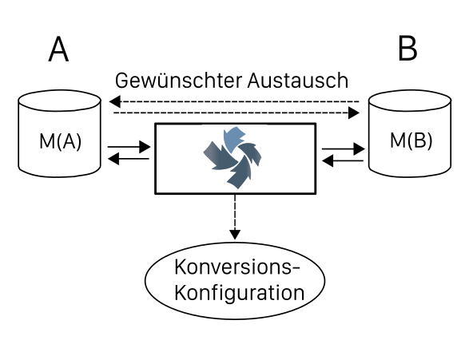

OpenDataHub
Teilen, Beziehen, und Konvertieren von Daten
Bachelorarbeit Informatik Frühjahrssemester 2015
Remo Liebi, Fabio Scala, Christoph Hüsler
Das Team

Remo Liebi
Teilzeit, Freelancer
Christoph Hüsler
Teilzeit, Xinventa GmbH
Fabio Scala
Teilzeit, Swisscom AG
Inhalt
- Motivation und Aufgabenstellung
- Resultate
- Demo
- Fragen & Diskussion
Motivation
- Methodenfreiheit → unterschiedliche Software
- Viele Kommunikationspartner
- Unterschiedliche Schemata
→ Datenaustausch schwierig
Motivation
Aufgabenstellung
[...] zentrales Portal (= "OpenDataHub") [...], über dieses sich Daten offen teilen, beziehen und konvertieren lassen wobei sich die Beteiligten nicht um die Formatkonversion und Schematransformation kümmern müssen: Die Datenlieferanten liefern ihre Daten in ihrem Format und Schema und die Nutzer beziehen es ihrerseits, wie sie wollen - vorausgesetzt, die entsprechende Formatkonversion und Schematransformation existiert.
Aufgabenstellung
Use Cases
- Postadressen
- Schematransformation
- Gebäudeadressen
- Integration mehrerer Datenquellen
- Verknüpfen von Adressbuch mit dazugehörenden Gebäudeeingängen aus MOPublic (Basel)
- TROBDB: Verkehrshindernis-Datenbank
- Integration diverser Datenquellen
Resultate
- Web-Applikation
- Datenaustausch: Upload von Dateien oder auf Basis von URLs (z.B. WFS)
- Automatische Format-Konversion
- Transformationen per ODHQL, einem SQL-Subset